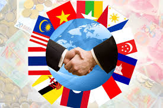
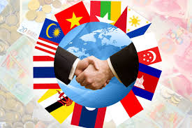
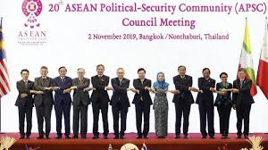
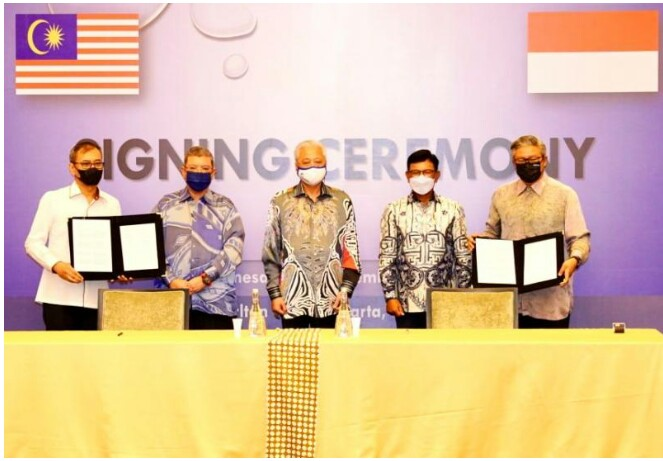
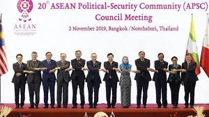
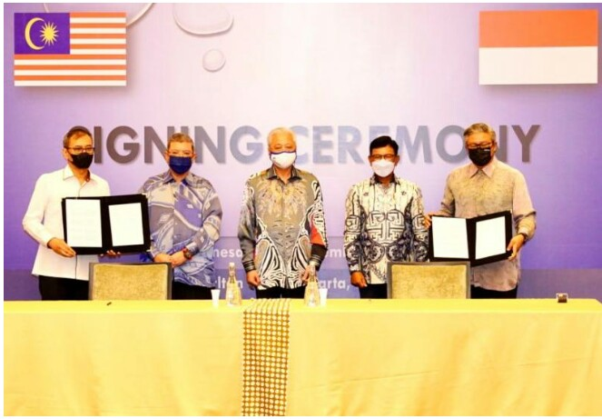

 



Penjelasan
Kerja sama regional merujuk pada bentuk kolaborasi antara negara-negara yang terletak dalam kawasan
geografis yang sama atau berdekatan, dengan tujuan untuk mencapai tujuan bersama. Kerja sama ini
melibatkan pengaturan hubungan antarnegara yang terorganisir dalam berbagai bidang, seperti ekonomi,
politik, sosial, dan budaya. Dalam dunia yang semakin terhubung ini, negara-negara sadar bahwa banyak
isu yang mereka hadapi memerlukan pendekatan bersama untuk menyelesaikannya. Dengan demikian, kerja sama
regional menjadi penting untuk mengatasi masalah yang sifatnya lintas batas, seperti kemiskinan,
perubahan iklim, serta ancaman keamanan.
Salah satu tujuan utama dari kerja sama regional adalah mempererat hubungan antarnegara yang memiliki
kepentingan yang serupa. Negara-negara yang tergabung dalam kerja sama ini dapat saling mendukung dalam
mencapai tujuan pembangunan ekonomi yang lebih baik. Misalnya, negara-negara yang terlibat dalam kawasan
perdagangan bebas atau perjanjian ekonomi regional dapat menikmati akses pasar yang lebih luas dan
mengurangi hambatan perdagangan, seperti tarif atau kuota. Hal ini tidak hanya menguntungkan negara
anggota, tetapi juga berkontribusi pada pertumbuhan ekonomi regional yang lebih stabil.
Selain itu, kerja sama regional juga membantu negara-negara dalam menciptakan stabilitas politik dan
keamanan di kawasan tersebut. Ketika negara-negara bekerja sama secara erat, mereka lebih mudah untuk
mengelola dan menyelesaikan konflik yang mungkin timbul, baik yang bersifat domestik maupun antarnegara.
Misalnya, melalui dialog multilateral dan mekanisme penyelesaian sengketa, negara-negara yang terlibat
dapat lebih efektif dalam menangani masalah-masalah politik atau potensi ketegangan yang dapat mengancam
perdamaian regional.
Kerja sama regional tidak hanya terbatas pada aspek ekonomi dan politik, tetapi juga meluas ke bidang
sosial dan budaya. Negara-negara dalam suatu kawasan dapat melakukan pertukaran budaya, pendidikan, dan
ilmu pengetahuan yang memperkaya pemahaman antarbangsa. Program-program pertukaran pelajar, seminar
internasional, dan kolaborasi di bidang riset ilmiah dapat mempererat hubungan sosial antara masyarakat
negara-negara anggota. Dengan demikian, kerja sama ini juga berperan dalam memperkuat solidaritas sosial
dan membangun rasa saling menghormati antarbangsa.
Namun, meskipun banyak keuntungan yang ditawarkan oleh kerja sama regional, terdapat juga tantangan yang
harus dihadapi. Perbedaan dalam sistem politik, kebijakan domestik, atau kepentingan ekonomi antara
negara-negara anggota bisa menjadi hambatan bagi kelancaran implementasi kerja sama tersebut. Selain
itu, ketergantungan pada negara-negara besar dalam suatu kawasan kadang bisa menimbulkan
ketidakseimbangan dalam pengambilan keputusan. Oleh karena itu, agar kerja sama regional dapat berjalan
dengan baik, dibutuhkan komitmen yang kuat dari semua pihak untuk saling mendengarkan, menghargai, dan
menyesuaikan kebijakan sesuai dengan kebutuhan bersama.